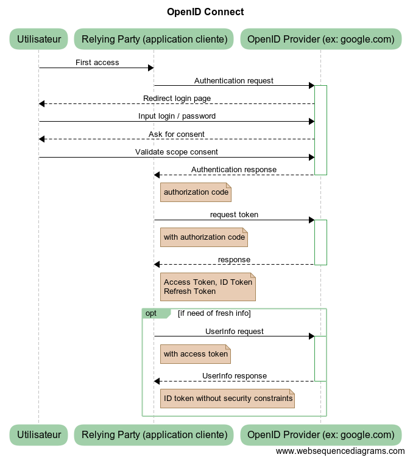
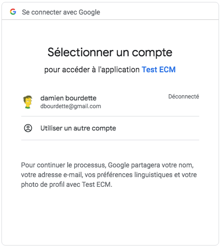

Notre application permet de modifier les données en base via l'interface HTTP.
C'est très pratique mais un peu trop ouvert à tout le monde...
Comment sécuriser ces accès ?
La sécurité se divise toujours en 2 parties :
La partie Authentication peut être complexe et il est souvent pratique de la déléguer à un tier.
Un identity provider joue ce rôle : gérer les identités.
Par exemple : Google's OpenID Connect, Facebook Login...
La partie Authorisation est gérée par notre application.
Pour transférer des données sensibles, le protocol HTTPS (HTTP + TLS) est obligatoire (et pas suffisant).
Comme il est difficile de savoir à priori si il y aura des données sensibles échangées et de toutes façons, afin de préserver la confidentialité, les navigateurs encouragent fortement le https.
Pour héberger une application, il faudra donc obtenir et mettre en place un certificat.
Cela a un coût et il existe des solutions gratuites comme Let’s Encrypt
Spring propose un framework afin de gérer la sécurité au sein des applications.
➤ Ajoutez le starter security
implementation 'org.springframework.boot:spring-boot-starter-security'Notre application est désormais (un peu trop) sécurisée
Au démarrage de l'application, on peut voir passer un log :
Using generated security password: c603f652-a458-46ec-acd7-c80c00a884fbIl est donc possible de se logguer avec le login 'user' et ce mot de passe.
Spring security a mis en place, sans configuration :
Il est possible de définir notre utilisateur via les clés de configurations :
spring.security.user.name=user
spring.security.user.password=monpasswordNous allons reprendre la main sur la configuration de spring security
➤ Ajoutez la classe SecurityConfiguration
@Configuration
@EnableWebSecurity
class SecurityConfiguration extends WebSecurityConfigurerAdapter {
@Override
protected void configure(AuthenticationManagerBuilder auth) throws Exception {
auth
.inMemoryAuthentication()
.withUser("user")
.password("{noop}password")
.roles("USER")
.and()
.withUser("admin")
.password("{noop}admin")
.roles("USER", "ADMIN")
}
@Override
protected void configure(HttpSecurity http) throws Exception {
http
.authorizeRequests()
.anyRequest()
.authenticated()
.and()
.httpBasic()
}
}
Ce code crée 2 utilisateurs avec des rôles différents, puis protège tout le site en demandant d'être authentifié.
La méthode de connexion proposée est le BASIC. Dans un navigateur, cela se traduit par une boite de dialogue qui demande un login et un mot de passe.
Le problème avec une authentication de type BASIC, c'est qu'on ne peut pas se déconnecter
Cela peut être utilise pour des tests ou une API, mais c'est généralement pas assez riche.
➤ Changer la configuration afin de récupérer le formulaire :
http
.authorizeRequests()
.anyRequest()
.authenticated()
.and()
.formLogin()
.and()
.logout()Comme nous construisons une API, un formulaire n'est sans doute pas une bonne idée ici sur le long terme. Mais cela va nous permettre de faire un peu plus de tests facilement.
Une fois connecté, la réquête véhicule une information liée à l'identité de la personne : c'est le Principal.
Un Principal possède une liste d'Authority : ce sont les permissions accordées à celui-ci.
Il y a d'autres classes en jeu, mais on se limitera à cela pour le moment.
Dans notre code, les roles (USER et ADMIN) des utilisateurs vont servir pour autoriser ou non l'accès à certaines ressources.
Nous souhaitons avoir le comportement suivant :
➤ Mettez en place la configuration suivante, et vérifier son bon fonctionnement
http
.antMatcher('/**')
.authorizeRequests()
.antMatchers('/').permitAll() // index pour tous
.antMatchers(HttpMethod.POST, "/login", "/logout").permitAll() // pouvoir se logguer
.antMatchers(HttpMethod.POST, '/**').hasRole('ADMIN')
.antMatchers(HttpMethod.PUT, '/**').hasRole('ADMIN')
.antMatchers(HttpMethod.DELETE, '/**').hasRole('ADMIN')
.anyRequest().authenticated() // être authentifié
.and()
.formLogin()
.and()
.logout()
.and()
.csrf().disable() // pas de csrf pour les API Est ce que les test sur les Controllers passent encore ? Pourquoi ?
➤ Ajoutez la dépendance suivante
testImplementation 'org.springframework.security:spring-security-test'Et corrigez les tests avec @WithMockUser
(documentation)
Il est aussi possible de sécuriser les méhtodes des Controllers au cas par cas
On peut utiliser l'annotation @Secured
@Secured("ROLE_ADMIN")ou bien @PreAuthorize et @PostAuthorize
@PreAuthorize("hasRole('ROLE_ADMIN')")Voir spring-security-method-security
Gérer soit même les utilisateurs (logins et mots de passe) est une chose complexe.
Il y a souvent une somme de services associés (changement / récupération de mot de passe...) et des contraintes légales (RGPD par exemple)
Pour gagner du temps, on peut donc se reposer sur un tiers qui gère les identités à notre place.
Nous allons utiliser Google Identity Platform qui respecte la spécification OpenID Connect
OpenID est une surcouche (gestion de l'identité) de OAuth 2.0, pour qui spring security fournit un support.
➤ Ajoutez les dépendances
implementation 'org.springframework.security:spring-security-oauth2-client'
implementation 'org.springframework.security:spring-security-oauth2-jose'➤ Et la configuration suivante
spring.security.oauth2.client.registration.google.client-id=[your-client-id]
spring.security.oauth2.client.registration.google.client-secret=[your-client-secret]
.yaml
plutôt qu'en .properties. Ce qui donnerait ici :
spring:
security:
oauth2:
client:
registration:
google:
client-id: [your-client-id]
client-secret: [your-client-secret]Pour mettre les bonnes valeurs de clientId et clientSecret il va falloir se rendre sur la console Google API.
➤ Créez votre projet et des identifiants via la console
Vous devriez avoir maintenant un client id et un client secret
➤ Rentrez ces valeurs dans la configuration.
➤ Ajoutez le controller suivant qui va nous permettre d'afficher nos informations
@RestController
class MeController {
@GetMapping("/me")
OAuth2AuthenticationToken me(OAuth2AuthenticationToken currentUser) {
currentUser
}
}➤ Et modifiez la config de sécurité afin d'ajouter une règle sur /me
.antMatchers('/me').authenticated()➤ Et remplacez formLogin() par oauth2Login()
➤ Redémarrez le serveur
Si tout se passe bien, vous devriez avoir une proposition de login en allant sur http://localhost:8080/me
Après le login, votre profil complet devrait apparaître
C'est un peu plus compliqué de se déconnecter car dès qu'on retourne sur /me
on est redirigé vers google qui ré autorise notre application à recevoir les informations.
Dans le json affiché sur /me il y a un champs idToken
avec un tokenValue.
Le contenu de ce champs est un token JWT (Json Web Token).
➤ Prenez son contenu et copiez le dans le champs encoded de https://jwt.io/
Ce token peut être utilisé dans un cookie ou un header http afin de véhiculer l'identité du client.
Avec cette technique, l'utilisateur à juste le ROLE_USER
En l'état, il n'est donc plus posible d'accéder à nos endpoints où il faut être admin.
Il faudrait mettre en place quelques composants supplémentaires afin de prendre l'identité transmise
et y ajouter nos roles. Cette surcouche devra être gérée de notre coté, ce n'est pas Google
qui nous apportera ceux ci. Un exemple possible est disponible ici.
Nous ne rentrerons pas dans les détails, ce serait un peu trop long.
Autre point embêtant, quand on se connecte via google, notre application crée un cookie JSESSIONID
C'est un cookie de session qui permet à notre serveur de savoir qui on est d'une requête à l'autre
(on ne repasse pas par Google à chaque requête).
Cela veut dire que ma session est spécifiquement liée à ce serveur.
Pour plein de raisons, ce n'est pas souhaitable.
Une possibilité est de garder le token JWT et de l'envoyer à chaque requête : à chaque requête le serveur pourra valider l'identité du client.
Si la partie client utilise une technologie du type Angular ou React, alors il devient possible de mettre ce token dans un header à chaque requête.
Il existe de nombreux tutoriaux sur le web.
Coté serveur, il faudrait alors rajouter les élements nécessaires afin de décoder ce token à chaque requête.
home{kind=link}
{kind=link}
{kind=link}
{kind=link}